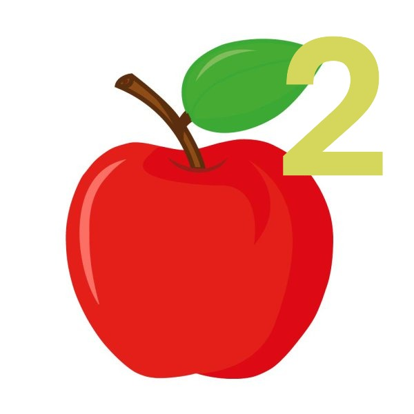

Explod 2 README

Instructions
Double click "start.bat" to start the game.
Mod the game by placing images and sounds in the subdirectories of the resources folder.
Check the controls in the settings.
Have fun!
Credits
Me - Developer of the Explod games.
Pedro - Creator of the Explod 1 consept.
And You!
A Letter from the Developer
Dear reader,
Sorry it took this long.
I hope you may enjoy what i've made, despite the wait.
It's done. 99.9% done.
And it's been a long ride.
Nevertheless, i have business to atend to,
things to see,
games to play,
and dividends to pay.
This game being one of them.
It's still sad to let it go.
I'll be real with you.
Explod 3 will take a while.
And people like this, well, maybe i'll make it faster,
But i wanna have 3D, OpenGL-based, 3D.
And THAT is going to take ages.
Though, don't get descouraged.
Explod WILL return.
But not very soon.
And i thank you for holding on.
Holding on to the hope that this day would come.
Forgive me for stretching it thin.
But we have matters to attend to.
So let's get this over with.
As i said, i have many dividends, this one to you.
And i've been wanting to get out of it for a LONG time.
So,
May you please enjoy what i've created, And have a great easter.
And may you join me on my journey, for the many creations that will come.
Oh and thanks to XxpeDRO3038xX. I've wouldn't gotten this far without him.
And whenever you're ready, double click "start.bat", and please,
expericence it for yourself.
Thank you, and I'll see you on the next one.
- Nicolas F. "epic pro omega quack gamer le sussy baka" Costa
4:08 PM 27/03/2026, (Brasilia Standard Time).